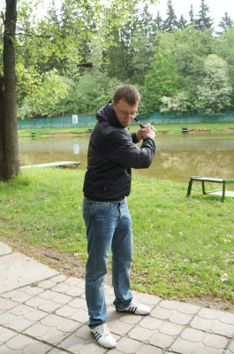

О компании "Каша PondakOFF"
Наша миссия
Каша Пондакофф крупнейший поставщик каш в РФ.
Мы видим своей миссией накормить каждого нашей вкуснющей кашкой.
Каша — это блюдо, состоящее из разваренных в воде (или в молоке) зёрен, иногда с такими добавками, как соль, сахар, приправы, молоко, фрукты и сухофрукты, варенье.
Наша каша имеет самые необыкновенные вкусы. Попробуйте и убедитесь в этом сами!
Наша история
Наша история неразрывно связана с именем нашего бессменного руководителя - Кондакова Павла Сергеевича.
Давайте послушаем, что он сам думает о нас:
Я вас всех ненавижу...
Я Паша Кондаков, и я люблю сосисочки.
Петр третий тоже обожал сосиски.
Наши ценности
К нашим ценностям относятся забота о людях и рядовых сотрудниках.